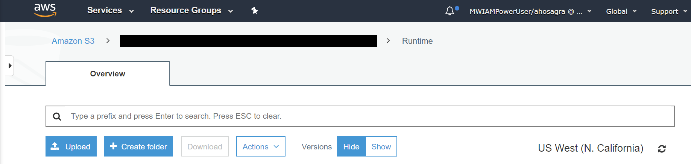
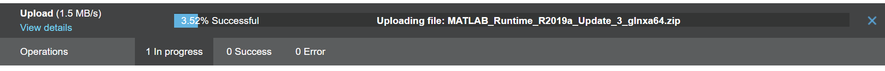

Installing the MATLAB Runtime
Setup
For details of provisioning the MATLAB runtime on Databricks® clusters see the MATLAB on Databricks Reference Architecture. This is the recommended approach for provisioning the MATLAB runtime and uses docker.
This applies both if the cluster is created via a policy or the createDatabricksCluster
MATLAB command. However if desired the following describes alternative manual
configuration approaches can be considered.
For clusters using Databricks runtime v17 or greater, docker must be used.
Custom setup
If executing MATLAB code that has been compiled (using MATLAB® Compiler SDK™) to .whl
format on a Databricks cluster, the cluster must be provisioned with the
version of the MATLAB runtime corresponding to the version of MATLAB used for the
compilation step. The MATLAB runtime can be configured using init scripts or by using
a docker container that includes the runtime, see:
Docker® runtimes for MATLAB and Databricks and Clusters.
Typically MATLAB runtimes are stored in .zip form on /Volumes, the default
directory being MathWorks/runtime. At cluster creation time the runtime is
copied to the cluster nodes, decompressed and installed via an init script.
A local copy of the init script is included in the package and can be found in
Software/MATLAB/script/runtime_install.sh. See: Init Scripts.
If more than one version of MATLAB is being used at the client side then multiple corresponding runtimes should be put in place on the server side. However, only one runtime version is supported on a cluster at any one time.
The MATLAB runtimes can be freely downloaded from: https://www.mathworks.com/products/compiler/matlab-runtime.html.
Databricks nodes always use Linux®, thus only the Linux version of the MATLAB runtime should be used.
The MATLAB runtime is not required to use Databricks Connect (unless using UDFs), JDBC/ODBC or the Databricks REST API interfaces.
The runtime setup step from the setup process can be invoked directly by calling:
matlab.databricks.setup.configureRuntimes() or by calling Software/MATLAB/setup.m
and skipping the unrelated sections. This will generate wget shell commands to
download the runtime directly to /Volumes using a %sh cell in a notebook.
They also provide the deep link directly to the runtimes directory in the portal.
There are several ways to put the runtime in place:
Notebook based download
Portal based upload.
Uploads to cloud object stores e.g.: AWS® S3 or Azure® Blob Storage.
Upload via the Files and particularly DBFS APIs are slower and or less reliable.
If a non default runtime location is used, e.g. S3 or ABFSS/Blob, this must then be specified as an argument when creating a cluster and should be configured in any policies in use. Using
/Volumesis strongly recommended.
Runtime download URLs are configured in the Software/MATLAB/config/package-settings.json
file. End user updates to this file should not normally be required.
Offline cluster requirements
For offline clusters (clusters without internet access), the MATLAB requires 2 essential
dependencies libgbm1 and libnss3, which are needed for Simulink® Compiler™ output.
The corresponding .deb files returned by apt-get should be stored in a /deps/
subdirectory of the directory containing the runtime.zip file.
Using docker removes this complexity by bundling all dependencies within the container image.
Enabling the MATLAB Runtime on a Databricks Cluster
Once the MATLAB Runtime .zip file is in place on Databricks it needs to enabled on newly created clusters. By default and when not using docker images this is done using so called init scripts, this is described in detail in Init Scripts.
Using the AWS Simple Storage Service (S3)
Navigate to an appropriate folder (e.g.: /MathWorks/runtime/) on AWS S3. Upload the
runtime image manually either using the web UI or via an appropriate CLI command.
Web UI:

On successful upload, the installer will be available at the specified location for use with the installer script.

CLI:
aws s3 cp ./MATLAB_Runtime_R2025b_glnxa64.zip s3://[REDACTED]/runtime/
Using the MATLAB Interface to AWS S3
To upload the runtime from with MATLAB directly to an S3 location see: https://www.mathworks.com/help/matlab/import_export/work-with-remote-data.html for configuration details:
setenv('AWS_ACCESS_KEY_ID', 'YOUR_AWS_ACCESS_KEY_ID');
setenv('AWS_SECRET_ACCESS_KEY', 'YOUR_AWS_SECRET_ACCESS_KEY');
copyfile('c:\localDir\MATLAB_Runtime_R2025b_glnxa64.zip', 's3://mybucketname/runtimes/');
Using Azure Blob storage
The runtime can e stored in blob storage and a HTTPS Shared Access Signature (SAS) URL
can be generated and used for runtime downloads.